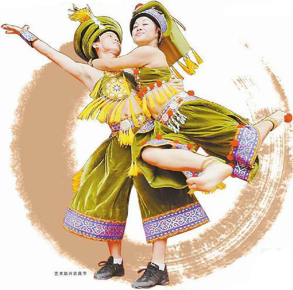
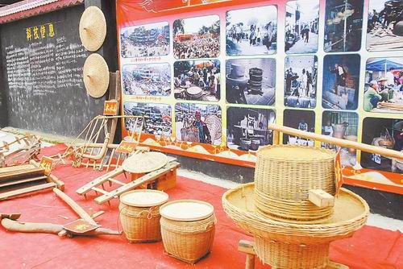
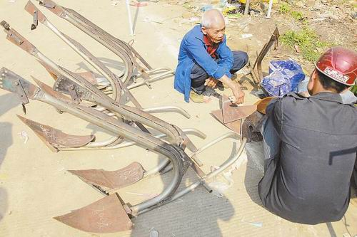
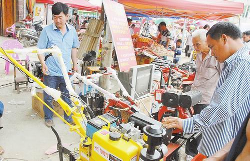

今日，为期6天的隆安县那桐“四月八”农具节谢幕。6天时间里，古老神秘的民俗、琳琅满目的商品和精彩纷呈的活动吸引了当地和周边地区的10万多群众。今年的农具节是规模最大、持续时间最长、参与人数最多的一届。为什么农具节会“落户”那桐镇？独特的农具节圩场今年有什么不同？农具节怎样助力隆安“那”文化品牌的打造？这种种记者预先设想的问题，都在农具节上找到了答案。

传统农具集中展示
千年主角略显寂寥
现代农具交易火爆演变：从最初的祈雨到农具展销
那桐“四月八”农具节是隆安县一个历史悠久的节日，距今已有四百多年历史。但若要细细考究起农具节的来由，时间的指针还得倒转至六七千年前。
据考证，早在六七千年前，骆越先民就已经生活在隆安，学会了制造大石铲，学会了利用大石铲进行稻作生产，并在运用大石铲的过程中创造出“祭石铲”“祭稻神”“招稻魂”“驱田鬼”“求雨”等一系列娱神文化。这些娱神文化与张弛有节的农事活动结合在一起，从选秧、育秧、栽秧、祈雨、耘田、除虫到收割、归仓、过年，季季有节，月月有节，内容繁杂，仪规各异，从而形成了完整的稻作文化节庆体系。如备耕阶段有二月社日、三月三歌圩节等；播种阶段有四月八农具节；田间管理阶段有五月四、五月五和五月二十六的秧神节，六月六和六月二十四的芒那节，七月半的祭鬼节，七月二十的娅王节等；收获阶段有八月十五稻花节、九月十九尝新节等；归仓阶段有十月十仓神节、正月初二报神节等——所以，农具节，其实是一年当中在播种阶段的农事节日。
隆安本地人何生德多年担任农具节活动的解说，他退休前曾是隆安县文体局局长，对农具节也颇有研究。对于记者“为什么农具节出现在那桐镇而不是别的乡镇”的疑问，他告诉记者一个当地流传多年的故事：在明朝万历年间，那桐遭遇罕见大旱，四月初八这天，群众“做法”求雨，果真天降倾盆大雨，那一年五谷丰登，六畜兴旺。从此每年的“四月八”人们都会隆重感恩祭祀，认为通过一定的仪式祈雨，就会天降甘霖。并把当日定为“浴佛节”。
“浴佛节”这一天，四村八寨的壮族民众都来参加祭祀三界神活动，他们把三界神抬出三界庙到街上游行，举行向天、地、水三界神求雨的祭祀仪式，祈求三界神赐予丰收。因为以前是单季稻的耕作方式，“四月八”正值备耕阶段，很快要用到农具，在当天祭祀活动中，民众就把自家生产的农具集中展销，之后春耕生产开始紧张进行。1965年，“浴佛节”正式更名“农具节”。
农具节从最初的祈雨活动，到农具唱主角，再到今天多元化的节庆活动——时代的烙印也深深刻在了这个节庆当中。
“农民对农具有着很深的情结。直到今天，在‘四月八’这一天，那桐镇及周边很多农户家里还保留祭农具的习俗。”何生德说。
刀耕火种
牛耕故事
逛圩：今年农机也来赚吆喝
在农具节期间，那桐圩市的农具琳琅满目，一年到头农事所用到的农具都能在此找到。前几年有人做过统计，在农具节这一天的那桐圩市上，就有500多种共20多万件的农具。
5月8日，记者也逛了那桐圩市，看到圩市上到处摆满了犁、耙、锄、刮、镰、铲、刀等传统农具，斗笠、箩筐、畚箕、竹篮、竹椅、簸箕等大量竹制品陈列成行，木箱、木柜、木床、小凳子等精制木质家具堆积如山……不少群众满载而归。
农具节声名远扬，来赶圩的、做买卖的，不但有那桐镇本地人，还吸引了来自周边地区如平果、天等、大新、武鸣、扶绥等地的群众。
韦荣停是平果人，他当天和家人用了两辆摩托车运了93个牛轭到圩市卖，每个售价20元，半天的功夫仅剩下几个。他告诉记者，因为自己做林木生意，找合适做牛轭的木料比较容易，所以每年他都会做几十上百个，在农具节这天赶来售卖。“那桐农具节名气很响，人气很旺，8年来我年年都来，这已经成了习惯了。”他说。
卖犁头的黄师傅来自坛洛镇，他今年带来了20多个自己打造、焊接的犁头。他告诉记者，虽说现在拖拉机逐渐多了，但是在很多传统农家，犁头还是必不可少的，当天他也只剩8个犁头未卖出。“我来那桐家具节卖犁头已经有10年了，每年都能卖十多二十个。现在油钱贵了，犁头还是有一定优势的。”
往年记者也逛农具节，发现今年与往年最大的不同是——更多的农机不再只局限于固定店面，而是摆上了圩市。而且赚吆喝的，大多是尚未占据市场、在当地只开张一年半载的农机店。
“阿牛哥农机店”今年1月才在隆安开张。孔经理告诉记者，他今天带来了几个型号的微耕机展销。微耕机在武鸣等县城已经很普及了，但是在隆安尚未有太大市场，他希望借助农具节的平台让更多群众了解这种农机。“即使在一些贫困的县份，微耕机一年也能卖出几百台，但现在几个月来我在隆安只卖出十几台，所以说这里的市场潜力还很大。微耕机说得通俗一点，凡是牛能干的农活，它都能干，而且年纪稍大一些的人也很容易操作，我对打开微耕机的销路很有信心。”
而去年才在隆安开门营业的“厚连农机”也在圩市设摊推荐农机，其中一款新型的碾米粉碎机吸引了不少群众，老板陆选如在忙着分发名片。她说：“因为是新店，认识的人不多，所以我想打打广告。”
记者采访了多家农机摊点，发现人们当天大多是来了解的，很少有人直接掏钱买。但商家都很乐观：“要摆好几天呢，大家肯定是先来了解，再决定购买。即便没有太多销量，也算是打了一次广告，划算！”
满载而归
欢乐有我
人潮涌动
地位：推动“那”文化走得更远
节庆习俗可以透视民族文化。作为民俗活化石的包括农具节在内的稻作节日，充分体现了稻作文化的丰富内涵。因此，那桐“四月八”家具节不仅是隆安县一个重大的民俗节日，而且也是隆安“那（在壮语中即是稻田之意）”文化品牌的一个重要组成部分，是“那”文化的骄子。
随着时代的发展与观念的改变，而今的农具节不仅仅局限于祈雨祭祀、农具买卖，还包括了更加丰富多彩的活动内容：民俗巡游、请神看大戏、文艺演出、山歌演唱、斗鸡斗狗斗鸟、拔河、篮球比赛、美食一条街、商品展销活动，等等。以浓郁的民俗色彩、热烈的商贸氛围、丰富的文体活动和深厚的历史文化底蕴，“包装”了一个多元化的民俗节日，品牌效应也日益凸显——那桐农具节分别获得“2005年南宁市县、区群众文化‘十大活动’奖”“南宁市‘一地一节’ 节庆文化品牌奖”和“南宁市非物质文化遗产项目”等称号，被列为自治区非物质文化遗产项目。
“隆安有着得天独厚的‘那’文化资源，经学者、专家多年考证，隆安已成为壮族稻作发明的中心。打造‘那’文化品牌，把隆安‘那’文化推向全国、推向世界，已成为隆安的责任和努力方向。”隆县一位领导如是说，“近年来，隆安县进一步加大对传统文化的保护力度，积极打造隆安的‘那’文化品牌。以那桐农具节为龙头，带动各个乡镇民族传统节日活动的开展，促进文化艺术事业的发展和文化旅游事业繁荣发展。”
传承“那”文化，隆安正在努力。“那”文化与当地文化、旅游、经济共同繁荣，才能更显示出其价值与生命力。